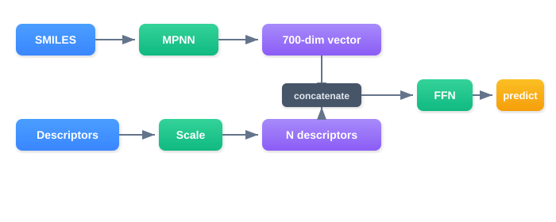
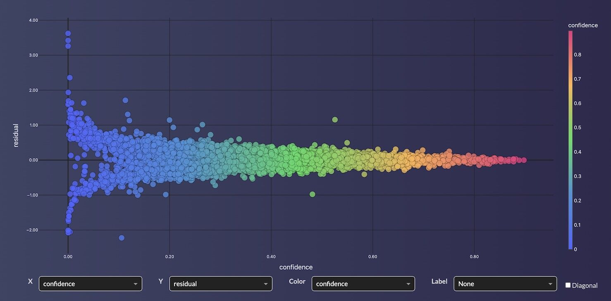
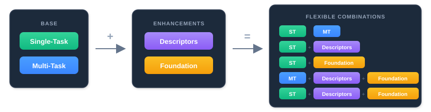

ChemProp Model Types
OpenADMET Challenge
ChemProp models were used by many top performers on the OpenADMET Leaderboard. Workbench supports all four ChemProp model types with the same simple API.
Workbench supports four types of ChemProp models, each suited for different use cases. All four follow the same API pattern — the difference is in how you configure target_column, feature_list, and hyperparameters.
| Model Type | Key Difference | Best For |
|---|---|---|
| Single-Task (ST) | One target, SMILES only | Standard single-endpoint prediction |
| Multi-Task (MT) | Multiple targets, shared MPNN | Related endpoints with shared chemistry |
| Hybrid | SMILES + molecular descriptors | Combining graph learning with domain features |
| Foundation | Pretrained MPNN weights | Small datasets, transfer learning |
Single-Task ChemProp
The standard ChemProp model trains a D-MPNN (Directed Message Passing Neural Network) on molecular graphs to predict a single target property.
from workbench.api import FeatureSet, ModelType, ModelFramework
feature_set = FeatureSet("open_admet_all")
model = feature_set.to_model(
name="logd-chemprop",
model_type=ModelType.UQ_REGRESSOR,
model_framework=ModelFramework.CHEMPROP,
target_column="logd",
feature_list=["smiles"],
description="ChemProp model for LogD prediction",
tags=["chemprop", "logd"],
)
# Deploy and run inference
endpoint = model.to_endpoint(tags=["chemprop", "logd"])
endpoint.auto_inference()
How it works: The MPNN reads the molecular graph directly — atoms are nodes, bonds are edges. Through multiple rounds of message passing, each atom aggregates information from its neighbors to build a learned molecular representation. This representation feeds into a feedforward network (FFN) that outputs the prediction.
Classification
ChemProp also supports classification for single-target models:
model = feature_set.to_model(
name="solubility-class-chemprop",
model_type=ModelType.CLASSIFIER,
model_framework=ModelFramework.CHEMPROP,
target_column="solubility_class",
feature_list=["smiles"],
description="ChemProp classifier for solubility classes",
tags=["chemprop", "classification"],
)
model.set_class_labels(["low", "medium", "high"])
Note
Classification is single-target only. For multi-target classification, train separate models and combine them with a MetaModel.
Multi-Task ChemProp
Multi-task models train a single MPNN that predicts multiple endpoints simultaneously. The MPNN learns a shared molecular representation, while each target gets its own FFN head. This is especially effective when targets share underlying molecular features (e.g., multiple ADMET endpoints).
ADMET_TARGETS = [
"logd", "ksol", "hlm_clint", "mlm_clint",
"caco_2_papp_a_b", "caco_2_efflux", "mppb", "mbpb", "mgmb",
]
model = feature_set.to_model(
name="admet-chemprop-mt",
model_type=ModelType.REGRESSOR,
model_framework=ModelFramework.CHEMPROP,
target_column=ADMET_TARGETS, # Pass a list for multi-task
feature_list=["smiles"],
description="Multi-task ChemProp for 9 ADMET endpoints",
tags=["chemprop", "multitask"],
)
Key differences from single-task:
target_columnis a list of strings instead of a single string- Missing values are handled automatically — task weights are computed from inverse sample counts so rarer targets aren't underrepresented
- All targets share the same MPNN but have independent FFN heads
- Regression only (not classification)
When to use multi-task: When you have related endpoints measured on overlapping compound sets. The shared MPNN learns common molecular features across tasks, which often improves performance compared to separate single-task models.
Hybrid ChemProp
Hybrid models combine ChemProp's learned graph representations with pre-computed molecular descriptors (e.g., RDKit features). The extra descriptors are concatenated with the MPNN output before the FFN, providing complementary information.

# Top SHAP features from an XGBoost model (complementary to MPNN)
TOP_FEATURES = [
"mollogp", "fr_halogen", "peoe_vsa6", "nbase", "peoe_vsa7",
"peoe_vsa9", "peoe_vsa1", "mi", "bcut2d_mrlow", "slogp_vsa1",
]
# Hybrid mode: just add descriptor columns to feature_list
hybrid_features = ["smiles"] + TOP_FEATURES
model = feature_set.to_model(
name="logd-chemprop-hybrid",
model_type=ModelType.UQ_REGRESSOR,
model_framework=ModelFramework.CHEMPROP,
target_column="logd",
feature_list=hybrid_features, # SMILES + descriptors
description="Hybrid ChemProp with top SHAP molecular descriptors",
tags=["chemprop", "hybrid"],
)
How it works: Any features beyond "smiles" in feature_list are automatically treated as extra descriptors. They are scaled (zero mean, unit variance) during training and concatenated with the MPNN output vector before feeding into the FFN.
When to use hybrid: When you have domain-specific descriptors that capture information the MPNN might miss. A common pattern is to train an XGBoost model first, extract the top SHAP features, and use those as extra descriptors for the hybrid model.
Foundation ChemProp
Foundation models start from pretrained MPNN weights instead of random initialization. This gives the model a strong prior for molecular representation learning, which is especially beneficial for small datasets.
CheMeleon
Workbench supports CheMeleon, a foundation model pretrained on 1M PubChem molecules to predict Mordred molecular descriptors. The pretrained weights are automatically downloaded on first use.
model = feature_set.to_model(
name="chemeleon-logd",
model_type=ModelType.UQ_REGRESSOR,
model_framework=ModelFramework.CHEMPROP,
target_column="logd",
feature_list=["smiles"],
description="CheMeleon foundation model for LogD",
tags=["chemprop", "chemeleon", "foundation"],
hyperparameters={
"from_foundation": "CheMeleon",
"max_epochs": 100,
},
)
Two-Phase Training (Recommended)
For more stable fine-tuning, freeze the MPNN for an initial warmup period and train only the FFN head. After the warmup, unfreeze everything and fine-tune end-to-end:
model = feature_set.to_model(
name="chemeleon-logd-frozen",
model_type=ModelType.UQ_REGRESSOR,
model_framework=ModelFramework.CHEMPROP,
target_column="logd",
feature_list=["smiles"],
description="CheMeleon with frozen MPNN warmup",
tags=["chemprop", "chemeleon", "foundation"],
hyperparameters={
"from_foundation": "CheMeleon",
"freeze_mpnn_epochs": 10, # Phase 1: train FFN only
"max_epochs": 100, # Total (10 frozen + 90 fine-tuning)
},
)
Phase 1 (epochs 1–10): MPNN weights are frozen. Only the FFN learns to map the pretrained representations to your target.
Phase 2 (epochs 11–100): MPNN is unfrozen. The entire model fine-tunes end-to-end, adapting the molecular representations to your specific task.
Foundation + Multi-Task
Foundation models combine naturally with multi-task learning:
model = feature_set.to_model(
name="chemeleon-mt",
model_type=ModelType.REGRESSOR,
model_framework=ModelFramework.CHEMPROP,
target_column=ADMET_TARGETS, # Multi-task
feature_list=["smiles"],
description="CheMeleon multi-task ADMET model",
hyperparameters={
"from_foundation": "CheMeleon",
"freeze_mpnn_epochs": 10,
"max_epochs": 100,
},
)
Foundation + Hybrid
And with hybrid descriptors:
model = feature_set.to_model(
name="chemeleon-logd-hybrid",
model_type=ModelType.UQ_REGRESSOR,
model_framework=ModelFramework.CHEMPROP,
target_column="logd",
feature_list=["smiles"] + TOP_FEATURES, # Hybrid
description="CheMeleon hybrid with molecular descriptors",
hyperparameters={
"from_foundation": "CheMeleon",
"freeze_mpnn_epochs": 10,
"max_epochs": 100,
},
)
Custom Pretrained Weights
You can also provide your own pretrained ChemProp model:
hyperparameters={
"from_foundation": "/path/to/my_pretrained_model.pt",
"freeze_mpnn_epochs": 5,
"max_epochs": 50,
}
Hyperparameters
All ChemProp model types share a common set of tunable hyperparameters:
| Parameter | Default | Description |
|---|---|---|
| hidden_dim | 700 | MPNN hidden dimension |
| depth | 6 | Number of message-passing steps |
| dropout | 0.1 | Dropout rate |
| ffn_hidden_dim | 2000 | FFN hidden layer dimension |
| ffn_num_layers | 2 | Number of FFN layers |
| batch_size | 64 | Training batch size |
| max_epochs | 400 | Maximum training epochs |
| patience | 50 | Early stopping patience |
| n_folds | 5 | Number of cross-validation folds (ensemble size) |
| split_strategy | random | Data splitting: random, scaffold, or butina |
| from_foundation | None | "CheMeleon" or path to pretrained .pt file |
| freeze_mpnn_epochs | 0 | Epochs to freeze MPNN (foundation models only) |
Split Strategies
Workbench supports three data splitting strategies for cross-validation:
- random — Standard random split. Good default for large, diverse datasets.
- scaffold — Groups molecules by Bemis-Murcko scaffold. Ensures no scaffold appears in both train and validation. Tests generalization to new chemical series.
- butina — Clusters molecules using Morgan fingerprint similarity (Tanimoto distance). Recommended for ADMET datasets where scaffold splits may be too aggressive.
model = feature_set.to_model(
name="logd-chemprop-butina",
model_type=ModelType.UQ_REGRESSOR,
model_framework=ModelFramework.CHEMPROP,
target_column="logd",
feature_list=["smiles"],
hyperparameters={
"split_strategy": "butina",
"butina_cutoff": 0.4, # Tanimoto distance threshold
},
)
Confidence and Uncertainty
All ChemProp models include built-in uncertainty quantification:
- Regression (UQ_REGRESSOR): Ensemble standard deviation across cross-validation folds provides calibrated confidence intervals. High confidence means the ensemble folds agree; low confidence means the compound may be outside the training domain.
- Classification: Uses VGMU (Variation Gamma-Mixture Uncertainty) based on ensemble probability variation.

Choosing the Right Model Type

General guidelines:
- Start with Single-Task for a single endpoint — it's the simplest and a good starting point for comparison
- Try Multi-Task when you have related endpoints measured on overlapping compounds
- Add Hybrid add custom/in-house descriptors when you have domain knowledge or want to boost performance with complementary features
- Use Foundation (CheMeleon) this is often the mose useful when your dataset is small (<1000 compounds) or when you want to leverage transfer learning from a large chemical space. The pretrained MPNN provides a strong starting point, and the two-phase training strategy can help stabilize fine-tuning.
- All options compose — you can use Foundation + Multi-Task + Hybrid together
Examples
Full code listings are in the repository under examples/models/chemprop.py and examples/models/chemprop_foundation.py.
Beta Software
Workbench is currently in beta. We're actively looking for beta testers! If you're interested in early access, contact us at workbench@supercowpowers.com.
Questions?

The SuperCowPowers team is happy to answer any questions you may have about AWS and Workbench.
- Support: workbench@supercowpowers.com
- Discord: Join us on Discord
- Website: supercowpowers.com
References
ChemProp v2 — The message-passing neural network framework that Workbench uses for molecular property prediction:
- Chemprop v2 Paper: Graff, D.E., Morgan, N.K., Burns, J.W., et al. "Chemprop v2: An Efficient, Modular Machine Learning Package for Chemical Property Prediction." Journal of Chemical Information and Modeling 66(1), 28–33 (2026). DOI: 10.1021/acs.jcim.5c02332
- Chemprop v1 Paper: Heid, E., Greenman, K.P., Chung, Y., et al. "Chemprop: A Machine Learning Package for Chemical Property Prediction." Journal of Chemical Information and Modeling 64(1), 9–17 (2024). DOI: 10.1021/acs.jcim.3c01250
- GitHub: https://github.com/chemprop/chemprop
CheMeleon — Foundation model pretrained on 1M PubChem molecules:
- Burns et al. "CheMeleon: A Pre-Trained Foundation Model for Molecular Property Prediction" 2025 — GitHub | Paper
® Amazon Web Services, AWS, the Powered by AWS logo, are trademarks of Amazon.com, Inc. or its affiliates